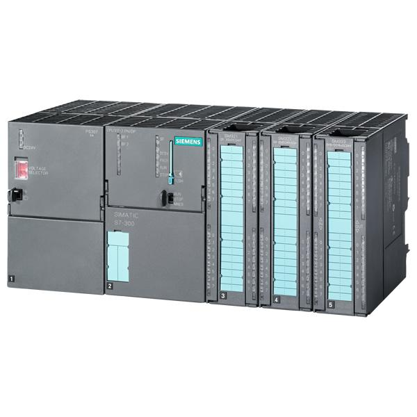
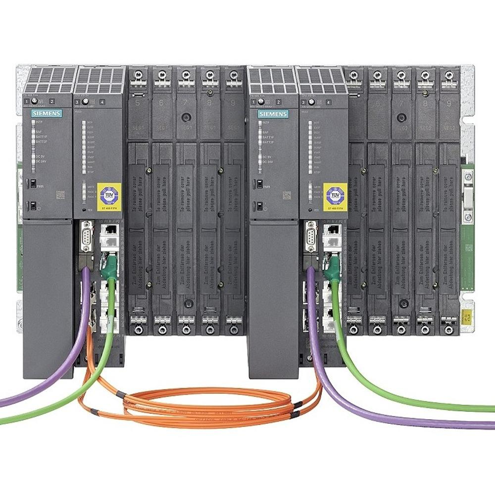
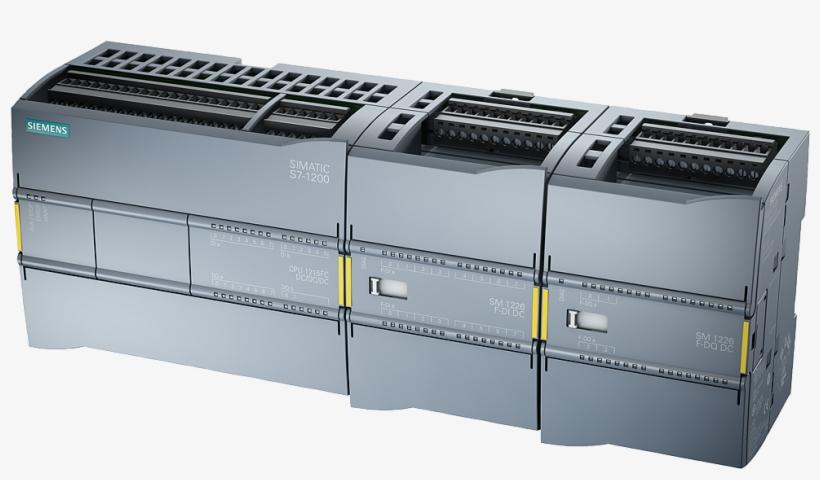
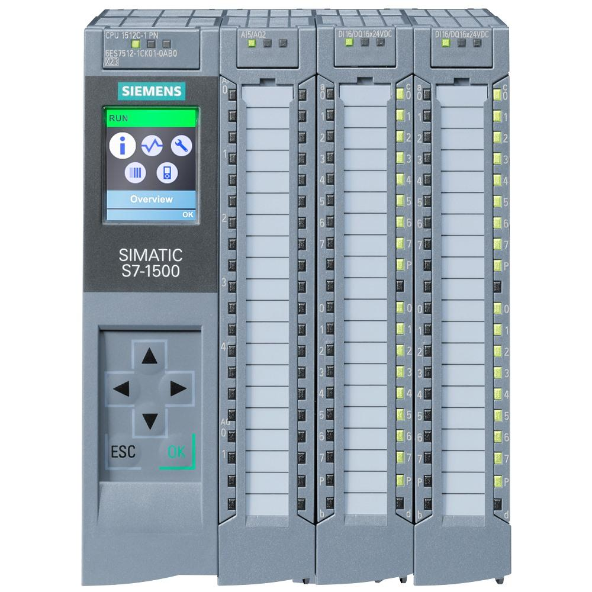

1. Definition and Purpose
Siemens is a major industrial automation manufacturer providing PLCs, distributed I/O, HMI systems, SCADA software, industrial communication networks, drives, motion control, and safety automation.
In industrial automation, Siemens PLCs execute control logic to operate machines, production lines, material-handling systems, process equipment, and manufacturing cells.
The important Siemens PLC families in this topic are:
- S7-300: Modular PLC family widely used in established machine and production-line automation.
- S7-400: Higher-performance modular PLC family historically used in larger and more complex automation systems.
- S7-1200: Compact PLC family intended mainly for small and medium-sized automation applications.
- S7-1500: Modern PLC family designed for higher-performance machine and plant automation.
Siemens uses different engineering software and hardware generations. Knowing the PLC family helps determine which software, communication method, instructions, and troubleshooting procedures are appropriate.
2. Siemens Automation Ecosystem
| Term | Meaning | Industrial application |
|---|---|---|
| SIMATIC | Siemens automation product family | PLCs, automation controllers and related systems |
| S7-300 | Modular PLC family | Established machine and line control |
| S7-400 | High-performance modular PLC family | Complex and larger automation systems |
| S7-1200 | Compact PLC family | Small and medium machines |
| S7-1500 | Modern high-performance PLC family | Advanced machine and plant automation |
| STEP 7 Classic | Traditional Siemens PLC engineering software | Primarily S7-300/400 projects |
| TIA Portal | Integrated engineering environment | PLC, HMI, drives and other supported devices |
| WinCC | Siemens HMI and SCADA software family | Operator interfaces, monitoring and supervision |
| ET 200 | Distributed I/O product family | Remote input/output near machines and equipment |
| PROFINET | Industrial Ethernet communication technology | PLC-to-I/O, HMI, drives and other devices |
| PROFIBUS | Industrial fieldbus technology | Communication with field devices and distributed I/O |
The exact combination depends on the hardware model, firmware, software version, installed licenses, and communication modules.
3. Siemens PLC Families
3.1 S7-300
The S7-300 is a modular PLC family used extensively in established industrial installations.

Typical characteristics:
- A modular hardware arrangement with a CPU and compatible signal or communication modules.
- Used in machine automation, assembly lines, conveyor systems, and manufacturing equipment.
- Commonly programmed using STEP 7 Classic and SIMATIC Manager.
- Depending on the model and installed hardware, communication can include MPI, PROFIBUS, and PROFINET.
- Programs commonly use organization blocks, function blocks, functions, and data blocks.
- Many installations use absolute addresses such as
I0.0,Q0.0, andDB10.DBX0.0, alongside symbolic names.
Example:
A PLC receives a sensor signal at input I0.0, evaluates interlocks, and energizes an output at Q0.0 when the machine is permitted to operate.
Maintenance consideration: S7-300 systems remain important in existing factories. Before making changes, identify the exact CPU, firmware, module configuration, project version, and communication setup. Do not assume that every S7-300 CPU supports the same instructions or network interfaces.
3.2 S7-400
The S7-400 is a higher-performance modular PLC family historically used for large or complex control applications.

Typical characteristics:
- Modular rack-based hardware.
- Used in complex production systems and larger plant automation applications.
- Supports larger control architectures than many compact PLCs of its generation.
- Historically engineered with STEP 7 Classic.
- Depending on the CPU and system configuration, some variants support redundant or high-availability architectures.
- Can be integrated with distributed I/O and industrial communication networks.
Where it fits: An S7-400 installation may coordinate multiple process areas, extensive I/O, or complex equipment where the original system architecture was designed around its capabilities.
Maintenance consideration: Redundancy, memory capacity, supported communications, and performance depend on the exact CPU and configuration. Not every S7-400 system is redundant.
3.3 S7-1200
The S7-1200 is a compact PLC family intended mainly for small and medium-sized automation applications.

Typical characteristics:
- Compact CPU with integrated functionality.
- Expansion through supported signal and communication modules.
- PROFINET/Ethernet connectivity on supported models.
- Programmed primarily in TIA Portal.
- Commonly used for conveyors, packaging machines, utility equipment, simple assembly machines, and small automated stations.
- Supports symbolic programming and modern engineering workflows.
Example applications include controlling a pneumatic fixture, monitoring a conveyor, sequencing a small machine, or communicating with an HMI.
Maintenance consideration: Check the exact CPU generation, firmware, supported TIA Portal version, device configuration, and available instructions. Do not assume that an S7-1200 program can be transferred directly to an S7-1500 without changes.
3.4 S7-1500
The S7-1500 is a modern PLC family intended for demanding machine and plant automation.

Typical characteristics:
- High-performance CPU options for different application sizes.
- Integrated diagnostic capabilities, with features varying by CPU model.
- Engineering primarily through TIA Portal.
- PROFINET communication on supported configurations.
- Support for advanced programming, monitoring, and troubleshooting features.
- Technology and fail-safe variants for supported motion-control and safety applications.
- Symbolic programming and optimized data access features on supported CPUs.
Maintenance consideration: Use the CPU's diagnostic information, module status, online monitoring, and available trace functions to isolate faults. Advanced features are model- and firmware-dependent.
4. Comparison of the Four PLC Families
| Feature | S7-300 | S7-400 | S7-1200 | S7-1500 |
|---|---|---|---|---|
| General generation | Established modular | Established high-performance modular | Compact generation | Modern high-performance generation |
| Typical application | Machines and production lines | Complex plant and line control | Small and medium machines | Advanced machines and plants |
| Hardware | Modular | Modular, rack-based | Compact CPU with expansion | Modular CPU and expansion |
| Main engineering environment | STEP 7 Classic | STEP 7 Classic | TIA Portal | TIA Portal |
| Programming | LAD, FBD and other supported languages | LAD, FBD and other supported languages | LAD, FBD, SCL and supported options | LAD, FBD, SCL and supported options |
| Communication | Model-dependent MPI, PROFIBUS, PROFINET | Model-dependent industrial networks | Ethernet/PROFINET on supported models | PROFINET and supported interfaces |
| Diagnostics | CPU and module dependent | CPU and module dependent | Integrated diagnostic tools | Advanced diagnostic capabilities, model-dependent |
| Data access | Absolute and symbolic addressing | Absolute and symbolic addressing | Symbolic and supported absolute access | Symbolic and optimized access options |
| Common consideration | Legacy project compatibility | Complex hardware and project compatibility | CPU/software compatibility | Firmware, optimized access and project compatibility |
These are general family-level distinctions, not guarantees for every CPU. The exact model and firmware determine the actual capabilities.
5. STEP 7 Classic
STEP 7 Classic is Siemens' traditional engineering software for supported SIMATIC PLC systems, especially S7-300 and S7-400.
It is associated with SIMATIC Manager, which is used to manage projects and access hardware configuration, program blocks, symbols, and related engineering functions.
Main functions
- Create and manage PLC projects.
- Configure racks, CPUs, signal modules, and supported communication hardware.
- Create and edit PLC program blocks.
- Define symbols for inputs, outputs, memory locations, and data.
- Download supported configurations and programs to the PLC.
- Monitor program execution and variable values.
- Diagnose CPU and module faults.
- Compare offline project information with the online PLC where supported.
Common programming languages
| Language | Description |
|---|---|
| LAD | Ladder Diagram, resembling electrical relay logic |
| FBD | Function Block Diagram, using graphical function blocks |
| STL/AWL | Statement List, a textual instruction-based language available on supported legacy platforms |
| SCL | Structured Control Language, a high-level textual programming language where supported |
Language availability depends on the CPU, software edition, installed components, and project generation.
Typical STEP 7 Classic workflow
- Open the correct project in SIMATIC Manager.
- Verify the configured CPU and hardware.
- Select the correct programming device interface.
- Establish communication with the PLC.
- Compare the online and offline information.
- Inspect program blocks, symbols, and diagnostics.
- Make approved changes and verify them on the correct system.
A project that opens successfully is not automatically compatible with every connected CPU. Software compatibility and actual hardware compatibility are separate requirements.
6. TIA Portal
TIA stands for Totally Integrated Automation. TIA Portal is Siemens' integrated engineering environment for supported automation devices.
It combines multiple engineering tasks within a common project structure, reducing the need to manage every automation device as a completely separate project.
Main functions
- PLC hardware configuration and programming.
- HMI configuration and screen development.
- Supported drive and technology-device configuration.
- PLC tag management.
- Online monitoring and diagnostic tools.
- Cross-reference and program navigation.
- Watch tables for observing and, where permitted, modifying variable values.
- Libraries and reusable program components.
- Project comparison and migration tools, where supported.
STEP 7 editions
| Software edition | General purpose |
|---|---|
| STEP 7 Basic | Entry-level PLC engineering for supported hardware, particularly S7-1200 |
| STEP 7 Professional | Broader PLC engineering capabilities, including supported S7-1200 and S7-1500 systems and other supported families |
Exact hardware support varies by TIA Portal release and license. Some older devices or migration scenarios require additional compatible software or specific versions.
Typical TIA Portal workflow
- Create or open the correct project.
- Add or identify the actual PLC model.
- Verify the device configuration and firmware.
- Configure the PG/PC interface and network connection.
- Go online and inspect CPU status.
- Compare the online system with the offline project.
- Monitor tags and program blocks.
- Review diagnostic messages and module status.
- Back up the approved project before making significant changes.
STEP 7 Classic versus TIA Portal
| Aspect | STEP 7 Classic | TIA Portal |
|---|---|---|
| Engineering style | Traditional project environment | Integrated engineering environment |
| Common PLC families | S7-300/400 | S7-1200/1500 and other supported devices |
| Project organization | SIMATIC Manager and associated tools | Integrated project tree |
| HMI integration | Often handled through separate engineering tools | Integrated HMI engineering for supported devices |
| Hardware configuration | HW Config | Device and network views |
| Diagnostics | Supported online and diagnostic tools | Integrated online and diagnostic tools |
| Migration | Legacy project handling | Migration tools for supported source projects and target versions |
Important: A STEP 7 Classic project and a TIA Portal project are not interchangeable file formats. Migration requires checking supported hardware, instructions, libraries, addresses, communication settings, and program behavior.
7. Siemens PLC Program Architecture
Siemens PLC programs are commonly organized using OBs, FBs, FCs, and DBs. Understanding these blocks is essential for maintenance and development.
7.1 OB: Organization Block
An Organization Block provides an execution entry point associated with a specific event or task.
Examples include:
- OB1: Common cyclic program execution on supported CPUs.
- Startup OBs: Execute during applicable startup events.
- Time-delay or cyclic interrupt OBs: Execute according to configured timing on supported CPUs.
- Hardware interrupt and diagnostic OBs: Handle supported events.
Not every CPU supports every OB type. An OB's presence and behavior depend on the CPU family and firmware.
7.2 FC: Function
A Function is a reusable logic block that does not have its own instance data block for static internal state.
Typical uses include:
- Scaling an analog value.
- Calculating a production count.
- Checking a group of permissive conditions.
- Converting engineering units.
- Performing reusable calculations.
An FC can still access or modify data passed to it or stored in other accessible memory areas.
7.3 FB: Function Block
A Function Block is a reusable logic block designed to work with instance-specific data.
An FB commonly uses an instance DB to retain its static state between calls.
Typical uses include:
- Motor control.
- Cylinder sequencing.
- Robot interface management.
- Alarm processing.
- Conveyor-zone control.
For example, one motor FB can be reused for several motors, with each instance storing its own parameters and state.
7.4 DB: Data Block
A Data Block stores structured data.
Two common forms are:
- Global DB: Holds data shared by multiple program blocks.
- Instance DB: Stores the instance-specific data associated with an FB.
A DB might contain motor commands, running feedback, interlock states, fault information, timers' associated data, or process parameters.
Block comparison
| Block | Main purpose | Own instance DB required? | Example |
|---|---|---|---|
| OB | Execution entry point | No | Cyclic control |
| FC | Reusable function | No | Analog scaling |
| FB | Reusable stateful logic | Normally yes, for instance data | Motor controller |
| DB | Data storage | Not applicable | Motor parameters |
The exact organization and memory behavior vary between legacy and modern CPU families.
Example program structure
OB1
|
+--> FB_Motor (Instance DB for Motor 1)
| |
| +--> Start/stop logic
| +--> Interlock evaluation
| +--> Fault handling
|
+--> FC_Analog_Scaling
|
+--> FB_Conveyor (Instance DB for Conveyor 1)
|
+--> Sequence logic
+--> Running feedback
+--> Alarm handling
This is a conceptual organization, not a mandatory Siemens program structure.
8. Data Types and Addressing
A Siemens PLC program uses data types to represent values, states, measurements, and structured information.
| Data type | Typical purpose |
|---|---|
| BOOL | Binary state, such as motor running |
| BYTE | 8-bit data |
| WORD | 16-bit data |
| DWORD | 32-bit data |
| INT | Signed integer |
| DINT | 32-bit signed integer |
| REAL | Floating-point value |
| TIME | Time interval |
| ARRAY | Collection of elements of a defined type |
| STRUCT or PLC data type | Group of related variables |
Exact supported types and syntax depend on the CPU and programming environment.
Absolute addressing
Legacy Siemens programs often use direct memory addresses.
| Address | General meaning |
|---|---|
I0.0 |
Input bit |
Q0.0 |
Output bit |
M0.0 |
Memory bit |
IB0 |
Input byte |
QB0 |
Output byte |
MW10 |
Memory word |
DB10.DBX0.0 |
Data bit in DB10 |
DB10.DBD4 |
Double word beginning at byte 4 in DB10 |
These are examples of Siemens address notation. They do not imply that the particular addresses are configured or available in a given PLC.
Symbolic addressing
Symbolic addressing uses meaningful names, such as:
Start_Request
Motor_Run_Command
Motor_Running_Feedback
Drive_Ready
Interlocks_OK
Fault_Active
Symbolic names make the program easier to read and maintain.
On modern CPUs, optimized data blocks can change how data is laid out and accessed. Do not assume that an absolute DB offset remains valid after a structural change, migration, or modification to an optimized DB.
9. Hardware Architecture
A Siemens automation system can contain a central controller, local I/O, distributed I/O, drives, operator panels, and other field devices.
HMI / SCADA
|
Industrial Network
|
+------------------+
| Siemens PLC CPU |
+------------------+
| | |
Local I/O Drives Remote I/O
| |
Sensors and ET 200 stations
actuators |
Sensors and actuators
Main hardware components
- CPU: Executes the control program.
- Power supply: Provides the required electrical supply where applicable.
- Signal modules: Provide digital or analog input/output channels.
- Communication modules: Provide additional communication interfaces where required.
- Distributed I/O: Places input/output modules closer to equipment.
- HMI: Allows operators to monitor and control permitted functions.
- Drives: Control motor speed, torque, and other supported functions.
- Network infrastructure: Connects controllers, I/O stations, HMIs, drives, and other devices.
The physical arrangement differs between S7-300/400 rack-based systems and the more compact or modern modular arrangements of S7-1200/1500.
10. Industrial Communication
PROFINET
PROFINET is an industrial Ethernet communication technology commonly used in Siemens automation systems.
It can connect supported PLCs to distributed I/O, HMIs, drives, and other industrial devices.
Maintenance checks include:
- Physical Ethernet connection and switch status.
- Correct IP configuration.
- Correct PROFINET device name where required.
- Correct device assignment in the engineering project.
- Controller and device diagnostic status.
- Network configuration and topology where supported.
An IP address alone does not guarantee that a PROFINET device is correctly configured. Device naming and controller configuration can also matter.
PROFIBUS
PROFIBUS is an industrial fieldbus used in many established installations.
Common maintenance checks include:
- Cable and connector condition.
- Bus termination and segment layout.
- Node address configuration.
- Communication diagnostics.
- Fault indicators on the master and field devices.
Some PROFIBUS installations use specialized connectors, diagnostic repeaters, or interface modules.
Other interfaces and protocols
Depending on the CPU, modules, software, and configuration, Siemens systems may also support technologies such as MPI, Modbus TCP, Modbus RTU, OPC UA, and other communication mechanisms.
Do not assume that every Siemens PLC supports every protocol natively. Verify the exact hardware and software capabilities.
PROFINET versus EtherNet/IP
Both use Ethernet infrastructure, but they are different industrial communication technologies.
| Aspect | PROFINET | EtherNet/IP |
|---|---|---|
| Ecosystem association | Common in Siemens systems | Common in Rockwell Automation systems |
| Application communication model | PROFINET protocols and services | CIP over Ethernet |
| Engineering environment | Siemens tools and supported third-party tools | Rockwell tools and supported third-party tools |
| Device configuration | Depends on the PROFINET system | Depends on the EtherNet/IP system |
They should not be treated as interchangeable merely because both use Ethernet cables and switches. Interoperability requires compatible devices, interfaces, and configuration.
11. Online and Offline Operations
This distinction is critical during maintenance.
- Offline project: The project currently stored on the engineering computer.
- Online PLC: The actual controller connected to the engineering computer.
- Download: Transfers supported project components from the engineering computer to the PLC.
- Upload: Retrieves supported data or program components from the PLC to the engineering computer.
- Compare: Identifies differences between online and offline information where the tools support comparison.
- Monitor: Displays live values or program execution status.
- Watch table: Displays selected variables and may provide write/modify functions when permitted.
- Diagnostic buffer: Records supported CPU and system events useful for troubleshooting.
Uploading from a PLC does not always recreate the original engineering project, comments, symbols, libraries, or documentation. A complete native project backup is preferable.
General online troubleshooting sequence
- Identify the CPU model, order number, and firmware.
- Confirm the correct engineering software and supported version.
- Select the correct PG/PC network interface.
- Verify physical connectivity and network settings.
- Locate the PLC using the available online-access tools.
- Establish an online connection.
- Check CPU mode, LEDs, and diagnostic information.
- Compare the online system with the intended offline project.
- Monitor relevant variables and program blocks.
- Make only authorized changes after securing a backup.
12. Common Siemens PLC Problems
| Symptom | Possible causes | First checks |
|---|---|---|
| PLC not visible online | Wrong network interface, subnet, cable, switch or access path | Check PG/PC interface and network connectivity |
| PROFINET device unavailable | Wrong device name, IP mismatch, disconnected device or configuration issue | Check device name, IP, diagnostics and wiring |
| CPU in STOP | Program error, startup issue, hardware fault or other CPU-specific cause | Read diagnostic buffer and inspect CPU status |
| I/O module fault | Missing module, wiring issue, incompatible configuration or module failure | Check module LEDs, hardware configuration and diagnostics |
| Program value not changing | Logic condition false, wrong tag, block not called or incorrect data access | Monitor the execution path and relevant variables |
| Online/offline mismatch | Wrong project, online modifications or version differences | Compare the correct project and connected CPU |
| Download rejected | Firmware mismatch, unsupported configuration, access protection or mode restriction | Verify CPU compatibility and software messages |
| Migrated project has errors | Unsupported instructions, hardware changes, library differences or addressing issues | Review migration reports and compile errors |
| HMI shows incorrect data | Wrong tag mapping, stale communication, scaling or data-type mismatch | Compare the HMI tag with the PLC variable |
Do not assume that a STOP state always means the PLC is defective. The diagnostic information should identify the actual reason or narrow down the investigation.
13. Practical Maintenance Example: Motor Not Starting
Assume a Siemens-controlled conveyor motor does not start when the operator presses Start.
The relevant PLC variables might be:
Start_Request
Auto_Mode
Drive_Ready
Interlocks_OK
Fault_Active
Motor_Run_Request
Motor_Running_FB
The intended logic could be represented conceptually as:
Motor_Run_Request =
Start_Request
AND Auto_Mode
AND Drive_Ready
AND Interlocks_OK
AND NOT Fault_Active
This is illustrative Boolean logic, not a complete motor-control or safety program.
Troubleshooting sequence
- Check whether
Start_Requestchanges when the operator presses Start. - Confirm that
Auto_Modeis active if automatic operation is required. - Check
Drive_Readyand the drive's own diagnostic status. - Identify which condition prevents
Interlocks_OKfrom becoming true. - Check whether
Fault_Activeis set and trace its source. - Monitor
Motor_Run_Requestand verify the relevant output or drive command. - Check the motor starter or drive, control wiring, feedback signals, and field conditions.
- Confirm whether
Motor_Running_FBchanges after the start command.
This method separates a PLC logic problem from a communication problem, drive fault, field wiring issue, or mechanical problem.
Important: Do not force outputs or bypass interlocks to make a machine run during normal production. Any approved testing must follow the site's isolation, safety, and change-control procedures. Safety-related logic must be handled by authorized personnel under the applicable validation process.
14. Firmware, Software and Compatibility
Before opening or modifying a Siemens PLC project, identify the following:
| Item | Why it matters |
|---|---|
| Exact CPU model | Determines hardware and instruction support |
| Order number | Identifies the specific hardware variant |
| Firmware version | Affects supported features and compatibility |
| Engineering software version | Determines which devices and project formats are supported |
| License edition | Determines available engineering capabilities |
| Hardware configuration | Must match the actual installation |
| Communication interfaces | Determine how the engineering computer connects |
| Libraries and device descriptions | May be needed to compile or configure the project |
| Passwords and access protection | May restrict online operations |
| Safety configuration | Requires additional controls and validation where applicable |
For a legacy system, keep the compatible engineering environment and a verified native project backup. For a migration, review the conversion report and verify behavior on the target hardware before commissioning.
15. Safety PLCs and Fail-Safe Systems
Siemens offers fail-safe controller variants and associated safety technologies for supported systems.
Key points:
- A standard PLC program and a safety program do not have identical responsibilities.
- Fail-safe hardware, supported safety instructions, configuration, and validation requirements depend on the system.
- Safety communication may use technologies such as PROFIsafe on supported equipment.
- Safety signatures, passwords, and validation records may be required by the installed platform and plant procedures.
- An ordinary PLC logic change must not be used to bypass a safety function.
- A safety-related change requires authorization, appropriate testing, documentation, and validation.
Never infer that a controller is safety-rated merely because it is a Siemens PLC. Confirm the exact CPU variant and installed safety configuration.
16. Important Siemens Terminology
| Term | Meaning |
|---|---|
| SIMATIC | Siemens automation product family |
| STEP 7 | Siemens PLC engineering software family |
| TIA Portal | Integrated engineering environment |
| OB | Organization Block |
| FC | Function |
| FB | Function Block |
| DB | Data Block |
| LAD | Ladder Diagram |
| FBD | Function Block Diagram |
| STL/AWL | Statement List on supported legacy platforms |
| SCL | Structured Control Language |
| ET 200 | Distributed I/O product family |
| PROFINET | Industrial Ethernet communication technology |
| PROFIBUS | Industrial fieldbus technology |
| HMI | Human-Machine Interface |
| GSD/GSDML | Device description formats used for supported fieldbus and PROFINET devices |
| Firmware | Software embedded in a hardware device |
| Optimized block access | Data-access mechanism available for supported modern PLC blocks |
| PG/PC interface | Engineering-computer communication interface selection |
| Diagnostic buffer | Recorded diagnostic events available on supported CPUs |
17. Siemens Versus Allen-Bradley: Initial Comparison
This comparison prepares the next study topic, without replacing the detailed Allen-Bradley notes.
| Concept | Siemens | Allen-Bradley |
|---|---|---|
| PLC families in this study | S7-300/400/1200/1500 | MicroLogix, CompactLogix, ControlLogix |
| Main engineering environments | STEP 7 Classic, TIA Portal | RSLogix 500, Studio 5000 and other model-specific tools |
| Legacy programming concepts | OB, FC, FB, DB | Program files and data files on older platforms; tasks, programs, routines and tags on Logix platforms |
| Common industrial Ethernet technology | PROFINET | EtherNet/IP |
| Distributed I/O | ET 200 and other supported systems | POINT I/O, FLEX I/O and other supported systems |
| Data representation | Symbolic and absolute addressing, depending on platform | Data files and addresses on legacy platforms; controller/program tags on Logix platforms |
| Online diagnostics | Siemens engineering tools | Rockwell engineering tools |
The families are not direct equivalents in every technical respect. Their hardware generations, execution models, data organization, communication methods, and engineering tools must be compared at the specific CPU or controller level.
18. Interview Questions and Answers
Q1. What is the difference between S7-300 and S7-1200?
S7-300 is an established modular PLC family commonly engineered using STEP 7 Classic. S7-1200 is a compact PLC family primarily engineered in TIA Portal. Their hardware architecture, supported instructions, communication options, and project formats differ.
Q2. What is the difference between S7-400 and S7-1500?
S7-400 is a legacy high-performance modular family. S7-1500 is a modern high-performance family with newer engineering and diagnostic capabilities. Actual performance, redundancy, communication, and application suitability depend on the selected CPU and configuration.
Q3. What is STEP 7?
STEP 7 is Siemens PLC engineering software used to configure hardware, program supported controllers, monitor variables, and diagnose automation systems. The term covers different generations and editions, including STEP 7 Classic and STEP 7 within TIA Portal.
Q4. What is TIA Portal?
TIA Portal is Siemens' integrated engineering environment for supported PLCs, HMIs, drives, and other automation devices.
Q5. Explain OB, FC, FB and DB.
- OB: Execution entry point associated with a task or event.
- FC: Reusable function without its own instance DB for static state.
- FB: Reusable logic block that commonly uses an instance DB to maintain instance-specific state.
- DB: Stores structured data, either globally or for an FB instance.
Q6. What is the difference between PROFINET and PROFIBUS?
PROFINET is an industrial Ethernet communication technology. PROFIBUS is an industrial fieldbus technology. They use different communication mechanisms and physical/network arrangements.
Q7. What is ET 200?
ET 200 is a Siemens distributed I/O product family that allows field input/output modules to be installed near equipment and connected to a supported controller.
Q8. Why can a PLC project fail to download?
Possible reasons include a software or firmware mismatch, unsupported hardware configuration, access protection, an incompatible project, a controller mode restriction, or a configuration error.
Q9. Why is online/offline comparison important?
It helps identify differences between the engineering project and the actual PLC. This reduces the risk of making changes using an outdated or incorrect project.
Q10. Why can migration from STEP 7 Classic to TIA Portal be difficult?
The target environment may not support every legacy CPU, instruction, library, address arrangement, or hardware configuration. Migration therefore requires compatibility checks, compilation, testing, and controlled commissioning.
19. Practical Study Exercises
Complete these exercises using a simulator, a training PLC, or an approved test environment.
- Identify the exact CPU family, model, order number, and firmware of an available Siemens PLC.
- Determine whether the project uses STEP 7 Classic or TIA Portal.
- Identify the OB, FC, FB, and DB structure in an existing training project.
- Locate a digital input, a motor command, and a feedback signal.
- Create a watch table and observe the variables during a controlled test.
- Inspect the CPU diagnostic buffer and identify any recorded events.
- Identify the communication method and verify the device configuration.
- Compare an offline training project with its connected test PLC.
- Create a small motor-permissive example using symbolic tags.
- Back up the project and record the CPU and software versions before making changes.
20. Final Mental Model
Think of Siemens PLC automation as five connected layers:
Engineering software
|
v
PLC program structure
OB + FB + FC + DB
|
v
CPU execution
|
v
Communication and I/O
PROFINET / PROFIBUS / supported interfaces
|
v
Sensors, drives, actuators and machines
The engineering software defines the project. The program blocks define the control logic and data organization. The CPU executes that logic. Communication networks connect the controller to distributed equipment. Sensors and actuators interact with the physical process.
For maintenance, identify the hardware first, establish the correct online connection, inspect diagnostics, monitor the signal path, compare online and offline data, and make only controlled changes.
For development, understand the block architecture, data types, execution behavior, communication configuration, and hardware limits before designing or modifying the application.
Next topic: 02_Allen_Bradley - Allen-Bradley: MicroLogix, CompactLogix, ControlLogix, Studio 5000